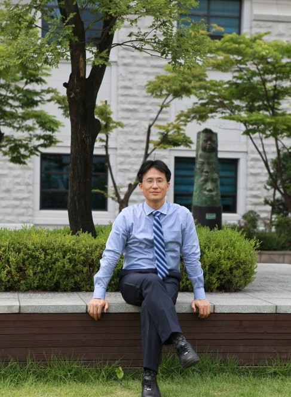

Principal Investigator

Seungsang Oh
Professor, Dept. of Mathematics, Korea University
- Location: Asan Science Hall, Room 520
- Email: seungsang@korea.ac.kr
- Tel: +82-2-3290-3086
Research Interests
Deep Learning, Topology, Knot Theory, Mathematics of AI
Education
- Ph.D. University of Texas at Austin (advisor : Cameron McA Gordon)
- B.S. KAIST
Employment
- 2002 - Present: Professor at Korea University
- 2023: Visiting Scholar at KAIST 김재철AI대학원
- 2012 - 2013: Visiting Scholar at Georgia Institute of Technology
- 2000 - 2002: Assistant Professor at Chonbuk National University
- 1999: Researcher at KAIST
- 1996: Researcher at MSRI, University of California at Berkeley
Awards & Honors
- 2025: ICASSP 2026 Grand Challenge on Environmental Sound Deepfake Detection Challenge (ESDD 2026) 3rd
- 2024: Editors' Choice Award 2024 - an outstanding paper published in Discrete Mathematics
- 2023: IJCAI 2023 Competition and Challenge on the Second Audio Deepfake Detection Challenge (ADD 2023) 3rd
- 2022: ICASSP 2022 Grand Challenge on the First Audio Deep Synthesis Detection Challenge (ADD 2022) 3rd
- 2004: 30 Excellent Research Result Award from KOSEF
- 1992 - 1994: Dodd Fellowships from University of Texas at Austin
- 1991: 2nd in National Undergraduate Mathematics Competition
- 1989: 8th in National Undergraduate Mathematics Competition